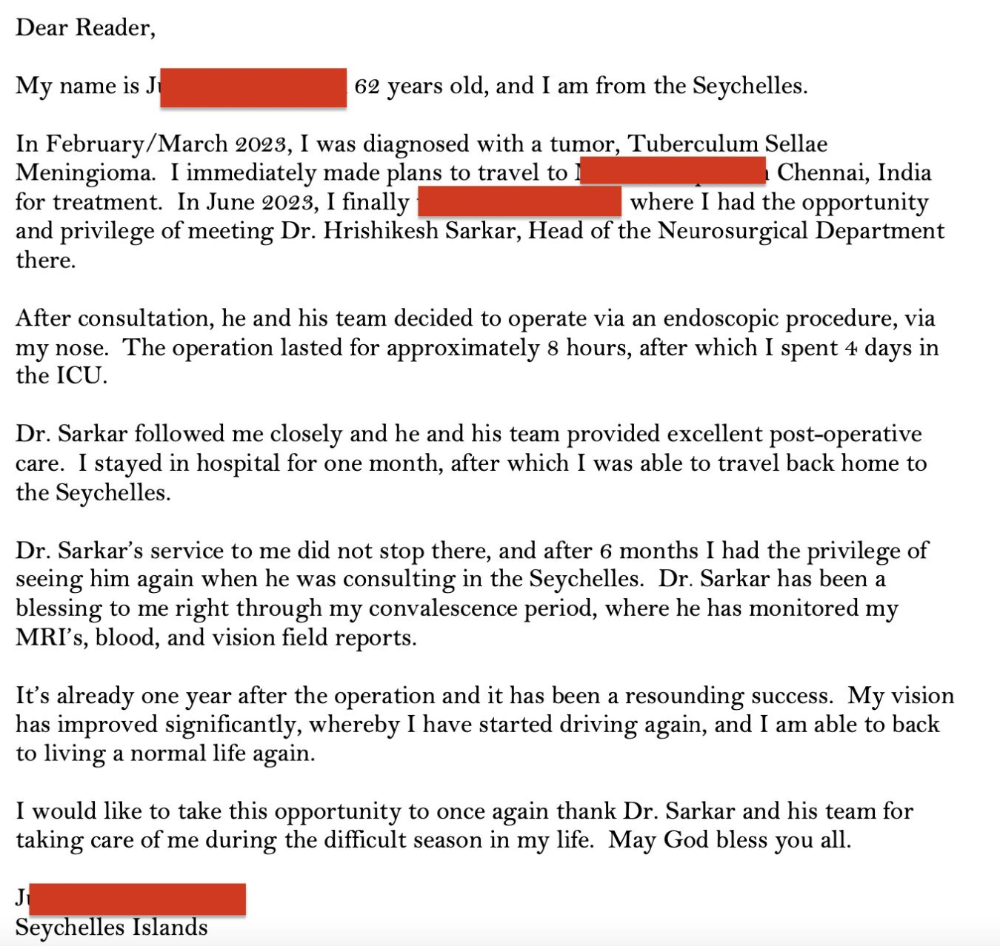
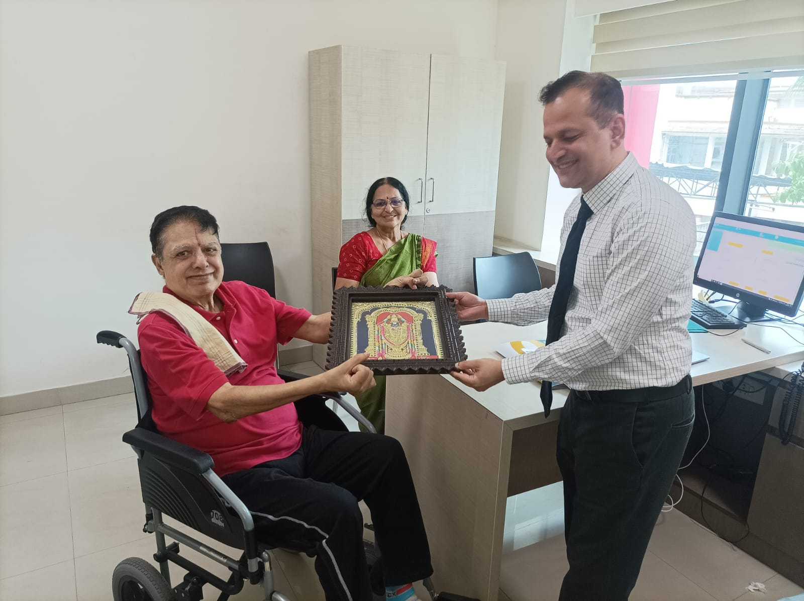

I was admitted to the Accident & emergency section of KDAH on 19-may-18 with an incident of seizures and resultant fracture in shoulder. Everything felt fine to start with, but one investigation led to other and ultimately I was diagnosed with a 3cm tumour in the brain. That is when I was introduced to Dr. Hrishikesh Sarkar and his team from Neurology department. The very first and lasting impression that I had from them was that of confident, professional and well-organized unit that inspired confidence and trust. Dr Sarkar has always maintained complete transparency about each procedure, its purpose, relevance, potential risks and impact. Thanks to the effective communication and confidence of Dr Sarkar and his team, when I went for a neurosurgery on 25th May-18 (one day after my 13th wedding anniversary), I was totally relaxed and cool about the entire procedure. It was an awake craniotomy, which meant that I was under local anaesthesia and fully conscious and awake throughout the procedure. However, the environment in the OT was completely relaxed and the way the doctors went about their tasks the surgery was a breeze. It went on for more than 5 hours but to me it seemed to be like under an hour. I was transferred out of the ICU to the ward within 24 hours of the surgery and discharged from the hospital on the 4th day after surgery. On my return home, I met friends and relatives who tried their best to make it appear that I had been through a “major” procedure. But I continue to maintain that it was just another medical treatment, and may be just another day at work for Dr Sarkar and his team. I understand that recovery and “normalcy” would take time, it’s a human body after all and there is no magic here. In fact, my brain needs to train my right leg to walk again. So, I need to be patient here. Also, radiation therapy may be required to manage the remainder of the tumour that could not be removed for strategic reasons. And some of the treatment and medicines have inevitable side- effects. However, with this kind of head start that I got at KDAH, I am confident of full recovery and getting back to all things that I could do before 19-may-18. I would like to express my most sincere thanks to Dr Sarkar and his team for seeing me through this procedure. They are someone who you can trust your brain with… Thank you.
Dear Dr. Sarkar, I just wanted to share how grateful I am for what you have done for Akshay. Him being a 19 year old healthy and fit boy, we never dreamt that he could be diagnosed with something so life threatening. I remember August 20, 2018 vividly. We brought him to the emergency department at KDAH as he suddenly lost consciousness and never anticipated what news we were about to be hit with. I am thankful to all the doctors that attended him in the emergency department for their swift decision making and knowledge. Doctor you briefed my parents in depth about his AVM rupture and the complete risks associated with the operation and the post-operative measures that needed to be taken. While he was on ventilator for a week post the surgery,you kept us informed about his condition and helped us not lose hope in what was the biggest crisis our family had to endure.We are thankful to God that he connected us with you. You are like an angel sent to us from above. You saved his life not once but twice, when one month into the recovery he had a SDH and infection near the surgical site. Thank you for being so cautious and calculative while treating him and being so kind hearted and patient while dealing with me and my family. It's been a couple of days since we discharged him from the hospital post his cranioplasty surgery done by you and can't help but think of what his fate would have been if we didn't encounter you. You are very skilled at what you do,with Akshay being a living example of it. I could see that you were genuinely happy about his recovery and thank you for always being so approachable and quenching my curiosity and being calm even while explaining even miniscule things to me. It's very reassuring for every family to find a doctor like you. Doctor you are doing a noble job saving lives and I wish nothing but the best for you. You along-with your talented team of doctors (a special mention to Dr. Bhushan who had been phenomenal in dealing with us) are doing a fantastic job. I don't think I can ever repay or explain how indebted I feel for what you have done for my brother. No matter which part of the world we are, I will be praying for you and your team's betterment always. I hope you reach new heights in your career as a result of your hard work and your distinguished personality. Wishing the best for you doctor and sending lots of blessings towards you. God gave him life,but you helped Akshay keep it. Regards, Akanksha Dubey
It was a ordinary day for us, on 12th August 2019, Ketan Soni finished his work at night 10pm. He started vomiting at 11pm and had a little bit of headache too. We visited a general physician at midnight 12, who treated him for vomiting thinking it must be food poisoning but he was quite restless and his vomiting didn’t stop. Thus we took him to the nearest hospital at 7am. A senior doctor arrived 2 hours later by then his condition had deteriorated and he was immediately shifted to ICU. To each one of our surprise Ketan was having a stroke. Let me put this in inverts “Stroke can happen to anybody.” Ketan who is just 39 years old, works out 5 days a week, doesn’t smoke, doesn’t drink and can be considered a fit and healthy individual is a prime example of this. A scan at local hospital revealed that a clot had blocked the blood flow in the brain. Doctors performed a procedure called “thrombectomy” to open the artery. After the surprise element we were expecting things to get back to normal in a week’s time. But here comes the shocking part and this was something I had heard for the first time in my life that is brain swelling , (that too in sensitive area called brainstem) like any other part in our body even brain swells. This was the most dangerous episode of my life. To make space for the swelling we have to cut a part of the skull so the brain gets enough space to spread. On advice of our family physician we shifted him to Kokilaben Hospital. I whole heartedly thank doctor Hrishikesh Sarkar and his team at Kokilaben Hospital to successfully perform this surgery. Chances of his survival were bare minimal but we had hope and faith in God, in our doctors and in the power of prayer. Hope is important because it can make the present moment less difficult to bare. It’s important to remember that setbacks, failures and tragedy are part of life. Whether we manage to find joy and success in the daily struggle of life is largely dependant on our ability to persevere through even the toughest adversity without ever giving up. After the surgery Ketan was in ICU for 16 days and later shifted to step down ICU. He started his rehabilitation. He worked with therapist to sit, stand, walk, speak, swallow and other regular activities. Ketan had an “entourage” of supporters including friends and family by his side. On 29th September 2019 he was discharged from Kokilaben Ambani Hospital. Along with Doctor Hrishikesh we would like to thank doctor Tushar Raut and Doctor Abhishek Srivastav for treating him. Today Ketan continues to work hard to recover and lead a normal life. He takes medicines to prevent blood clot and he is determined to not let anything stop him from doing what he loves. So to each and every one who reads this live life to the fullest, you never know when you might stop being the same person you are today. Life is so precious, it can be lost in an instant. ’Health’ and ‘Life’ are not valued till sickness or life threatening accidents occur. The greatest glory in living, lies not in never failing, but in rising every time we fail. May Ketan’s story be a source of encouragement and hope to all who read it.
"Math, science, history, unravelling the mysteries That all started with the big bang! " -- (Source, The Bing Bang Theory). This story too started with a bang. 11th Dec 2019, at around 2200 hours me and my dad boarded an auto rickshaw from Kandivali station. In the next few minutes, our auto rickshaw toppled, that too due too speed (For reference in Mumbai you can hardly ever reach 40 km/hrs). Little did we know then, that a mere 4Km distance to our house would be covered in 45 days and cost us two broken hands, a few broken ribs (injuries suffered by my dad). And I suffered a serious blow on my head from one of the top rods which make up the frame of an auto rickshaw. Ps. the auto rickshaw driver suffered zero injuries. Luck was maybe still on our side. I had lost consciousness (with no visible damage) but my dad was still conscious and within seconds a couple of young lads surrounded us and asked our name and emergency contact number. Luckily he was able to recall our landline number and not my mother's mobile number (as she rarely uses her mobile) and his friend's mobile number who was commuting back home from work and was about to reach Kandivali. These lads took us to a nearby government hospital (which looks grand from the outside but did not even have a functional X-ray Machine and only one doctor to attend emergency cases). My Mom and my Uncle reached the hospital within minutes and the young lads handed over all our belongings. After assessing the situation my mom decided to move us to a private hospital nearby, Namaha hospital. It is here that the severity of the case started unfolding. This hospital took us in and within some time a doctor rushed in to address my Mom. He declared that we will take in your husband but we will not be able to handle your son's case. We are trying to stabilize him but he needs to be moved to Kokilaben Hospital immediately. By the time a cardiac ambulance arrived, I had turned into a blood-spitting dragon. We reached Kokilaben Hospital at around 12 midnight, it is here that one can witness swift action. I was immediately taken to the emergency ward without any lengthy paperwork. At 0100 hours Dr.Anirudh took a few details to understand the case. By 0130 hours Dr.Strange (A genius doctor from the Marvel Studios) of this story had appeared and took charge. Dr Hrishikesh Sarkar a neurosurgeon, had taken charge and executed the operation. This operation took around 5 hours plus. Even after such a lengthy operation, nothing was certain. I was put in an artificial coma. But instead of 6 days, I was off the ventilator on the 3rd or 4th day. As time passed my memory and eyesight showed improvement. The best part about all the doctors involved was that they would listen to me as a patient and make changes if required. The level of preparedness of doctors was impeccable. I remember I was supposed to undergo a CT scan in which an ink had to be injected from the back near the spine. Dr Sarkar knew that it was going to be a painful experience but was necessary. In hindsight he did hint out me out but it was more than I had ever seen on TV. He had made all the arrangement necessary and in his words he would intercut the nurses “Load him with XYZ medicine”. And sitting there I would wonder am I going on a war that all my guns and artillery be fully loaded. As an engineer I may not know much about medicine but I could realize that it was done to mitigate any side effects. Dr Chinmay an anesthetic expert came in the CT scan prep room he asked me my name and asked me your language of communication (since they deal with people from around the globe) and only then did he began with his series of injection. He was extremely sweet he kept asking me to help him and be with him as he kept injecting one injection after the other. Even Dr Anirudh was very friendly and positive and kept assuring all will be well, you just eat. Which reminds me of the food and canteen department. During the earlier days I was not eating and the nutritionist inquired about my food preference. To which I replied noodels and rice. To my surprise they actually made it and this is how I started eating. Being an ex L&Tite and from design department we are obsessed with quality so one day I did ask them about food quality. And they again surprised me. The food is prepared and tested and a lab report is made. After this 3 people are supposed to taste it before it is given to patients. This shows the organizations commitment as it is rightly said, “Design is in the details.” Apart from the Doctors and medical staff’s dedication technology too played a big part in some of the most crucial days or events. Be it medical science, medical equipment or communication. When the time came to refill the used blood, it was one what’s app message that spread like fire. From a batch mate taking up the initiative via an alumni group to arrange for blood and a college senior and a colleague who reached out to our ex team members at L&T Defence. Even my Ex-Boss a retired commander from Navy provided all the support he could even though he was attending a meeting in another country. An overwhelming support was provided by both these communities for which I am really thankful. With so many wishes and hard work of so many people, I am glad to report that I am recovering well. As I am writing this on 19 May 2019 I have regained around 10 Kgs. From being unable to walk without support post operation I am again able to walk 8k steps. From my personal experience, I would request all those who have had the patience to read this to eat healthy and stay fit. I wish all the doctors and support staff the best of health and thank them for their service to this nation in this hour of need. May the force be with them. Best Regards, Dhruv Khandelwal.